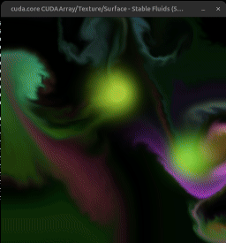

The question: does the choice of CUDA compiler backend change performance — and where? The method: profile the identical Stable-Fluids GPU solver (one source file, 9 kernels) built by both compilers, holding the GPU, CUDA 13.3 toolchain, workload, and Python version constant — so any difference is the compiler alone.

| classic | mlir | |
|---|---|---|
| package | numba-cuda 0.30.2 | numba-cuda-mlir 0.4.0 |
| frontend | Numba IR → LLVM → NVVM → PTX | MLIR → PTX (LTOIR) |
| opt / LTO default | NVVM opt-3, no LTO | LTO, opt>0 |
| Python | 3.12.13 | 3.12.13 |
| cuda-bindings / ptxas | 13.3.1 / CUDA 13.3 | 13.3.1 / CUDA 13.3 |
| GPU | RTX 5880 Ada (sm_89), driver 595.71.05 | |
Bit-exact output on all 9 kernels at 256² / 512² / 1024² / 2048² → a fair race on identical work.
Small grids = host-launch-bound (37 launches/frame): mlir wins ~38%. Big grids = GPU-bound: identical.
# cudadrv/devices.py with self._lock: with driver.get_active_context() as ac: # driver query, each call ...
# dispatcher.py _prepare_args for ext in reversed(self.extensions): # hook loop ty, val = ext.prepare_args(...) devary = wrap_arg(val).to_device(retr, stream) # re-wrap + convert
# cudadrv/driver.py — twice per launch def safe_cuda_api_call(*a): return self._check_cuda_python_error(fname, libfn(*a)) cufunc = self._codelibrary.get_cufunc() # lookup each launch
# numba_cuda_mlir/descriptor.py type_key = tuple(type(a) for a in args) cached = self._sig_cache.get(type_key) if cached and fast_ok: return self._launch(argtypes, args) # skip re-prep
Capture once, replay as a single launch. Both converge to the same FPS — classic gains more (3.7× vs 2.5×). mlir's eager edge disappears.
All below the 42-reg occupancy limit → no occupancy change. Dominant pressure_jacobi: 30 = 30.
mlir trims −10–19% on stencils, classic wins colorize — yet GPU time is identical. The limiter is float64 throughput (Python literals promote), not instruction count.
Context pre-warmed → pure compile. No on-disk cache, so paid every process.
| registers / thread pressure_jacobi · fewer = better | LTO off | LTO on |
|---|---|---|
| classic | 30 | 30 |
| mlir | 50 | 30 |
| what we measured | winner | by how much |
|---|---|---|
| output correctness | tie | exact same numbers, every grid size |
| GPU kernel speed | tie | same runtime & occupancy |
| GPU code size | tie* | mlir writes ~15% fewer instrs — but no faster; equal once both use LTO |
| compile time | mlir | ~14% faster |
| kernel-launch overhead | mlir | 5.3 vs 8.6 µs/launch → +38% FPS on small grids |
| FPS on big grids / with graphs | tie | identical |
Core idea: for performance the two compilers are interchangeable — same results, same kernel speed. mlir's only real edge is cheaper kernel launching, which matters on small workloads and vanishes with CUDA graphs.